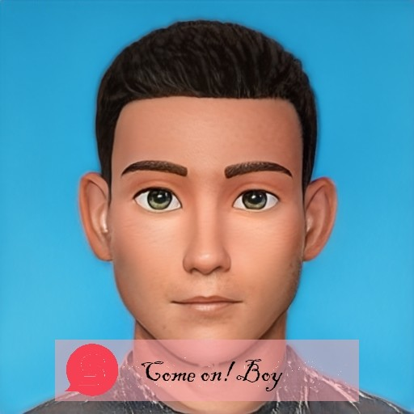

把 LLM 能力落成能用的系统。独立完成过企业知识库 RAG 问答系统的选型、搭建与调优（RAGFlow / FastGPT / Dify），设计过基于四级知识树的 AI 试题生成流水线，并持续跟进 MCP Server 与 Agent 工作流。技术栈横跨 Python / Java / 前端 / Linux 运维，能一个人把 AI 应用从环境搭建做到上线运维。
差异化优势：不只是调 RAG 平台参数的使用者，也懂底层部署——Docker、向量库、GPU 显存分配、Nginx 反向代理、数据库读写分离都自己动手。遇到问题不依赖平台方，能独立排障到根因。与只会调 API 写 Prompt 的画像不同，我的重心在模型之外的那 90% 工程：harness 编排、上下文与缓存设计、网关与协议、成本与稳定性、以及出问题时的分层定位能力。
查看简历如果你有合适的岗位机会或项目合作意向，欢迎邮件联系我。
发邮件给我